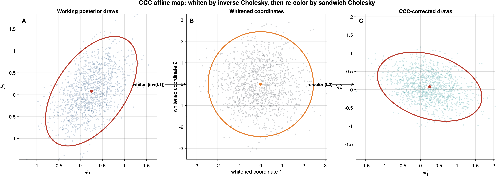

6 Corollaries 1–2: Posterior and CCC Equivalence
The likelihood isomorphism (Theorem 1) and the sandwich equivalence (Theorem 2) are properties of the objective function and its derivatives. This chapter draws two Bayesian consequences: the posteriors are identical (Corollary 1), and the Cholesky-corrected posterior draws are identical in distribution (Corollary 2). Together, these results complete the chain of equivalences that connects every inferential quantity across the two frameworks.
The key mechanism is simple. The constant \(e^c\) from Theorem 1 enters as a multiplicative factor in the likelihood. In Bayes’ formula, it appears identically in the numerator and denominator and cancels exactly — regardless of the prior, the parameter dimension, or the specific form of the posterior. Because \(c\) depends on neither \(\boldsymbol{\phi}\) nor \(\sigma^2_\theta\), the cancellation is complete over the full joint posterior, not merely over a conditional slice. The CCC equivalence then follows by combining the identical posteriors with the identical sandwich matrices.
6.1 Corollary 1: Posterior Equivalence
6.1.1 Statement
Under conditions (E1)–(E3) and (E5), suppose both models are endowed with the same priors: \[ p(\boldsymbol{\beta}) = p_0(\boldsymbol{\beta}), \qquad p(\sigma^2_\theta) = p_1(\sigma^2_\theta), \qquad \theta_j \mid \sigma^2_\theta \sim \textsf{N}(0, \sigma^2_\theta) \;\;\text{for both models.} \] Then the survey pseudo-posterior and the meta-analytic working-model posterior are identical as probability measures on \((\boldsymbol{\beta}, \boldsymbol{\theta}, \sigma^2_\theta)\): \[ \pi^*_{\mathrm{surv}}(\boldsymbol{\phi}, \sigma^2_\theta \mid \mathbf{y}) \;=\; \pi_{\mathrm{meta}}(\boldsymbol{\phi}, \sigma^2_\theta \mid \mathbf{y}). \tag{6.1}\]
In particular:
Point summaries. All posterior means, modes, medians, and quantiles of every component of \((\boldsymbol{\phi}, \sigma^2_\theta)\) coincide.
Posterior predictive distributions. For any future observation \(\tilde{y}\), the predictive densities are identical: \(p(\tilde{y} \mid \mathbf{y})_{\mathrm{surv}} = p(\tilde{y} \mid \mathbf{y})_{\mathrm{meta}}\).
MCMC draws. Any MCMC algorithm applied to the survey pseudo-posterior generates draws from the meta-analytic posterior distribution, and vice versa.
Population posterior covariance. The posterior covariance matrices are identical: \(\boldsymbol{\Sigma}_{\mathrm{MCMC}}^{\mathrm{surv}} = \boldsymbol{\Sigma}_{\mathrm{MCMC}}^{\mathrm{meta}}\).
6.1.2 Full Proof
By Bayes’ theorem, the survey pseudo-posterior density is \[ \pi^*_{\mathrm{surv}}(\boldsymbol{\phi}, \sigma^2_\theta \mid \mathbf{y}) = \frac{\exp\!\left[\ell^{(w)}_{\mathrm{surv}}(\boldsymbol{\phi})\right] \cdot \prod_{j=1}^{J}\textsf{N}(\theta_j \mid 0, \sigma^2_\theta) \cdot p_0(\boldsymbol{\beta}) \cdot p_1(\sigma^2_\theta)}{\displaystyle\int \exp\!\left[\ell^{(w)}_{\mathrm{surv}}(\boldsymbol{\phi}')\right] \cdot \prod_{j}\textsf{N}(\theta_j' \mid 0, \sigma^2_\theta) \cdot p_0(\boldsymbol{\beta}') \cdot p_1(\sigma^2_\theta)\, d\boldsymbol{\phi}'\, d\sigma^2_\theta}. \tag{6.2}\]
By Theorem 1, \(\ell^{(w)}_{\mathrm{surv}}(\boldsymbol{\phi}) = \ell_{\mathrm{meta}}(\boldsymbol{\phi}) + c\), so \[ \exp\!\left[\ell^{(w)}_{\mathrm{surv}}(\boldsymbol{\phi})\right] = e^c \cdot \exp\!\left[\ell_{\mathrm{meta}}(\boldsymbol{\phi})\right]. \]
Verification that \(c\) does not depend on \(\sigma^2_\theta\). This step is essential for the cancellation to hold in the joint posterior over \((\boldsymbol{\phi}, \sigma^2_\theta)\). As established in Section 4.3.3, the constant \(c = \sum_{j=1}^{J} c_j\) with \(c_j = -\frac{n_j}{2}\log(\sigma^2_{e,j}/\bar{s}_j^2)\) depends only on the Level 1 quantities \(\{\sigma^2_{e,j}\}\), \(\{\bar{s}_j^2\}\), \(\rho\), and \(\{n_j\}\). The between-cluster variance \(\sigma^2_\theta\) enters the model exclusively through the Level 2 prior \(\theta_j \mid \sigma^2_\theta \sim \textsf{N}(0, \sigma^2_\theta)\), not through the Level 1 likelihood. Therefore \(e^c\) is constant with respect to both \(\boldsymbol{\phi}\) and \(\sigma^2_\theta\).
Substituting into Equation 6.2:
- Numerator: \(e^c \cdot \exp[\ell_{\mathrm{meta}}(\boldsymbol{\phi})] \cdot \prod_j \textsf{N}(\theta_j \mid 0, \sigma^2_\theta) \cdot p_0(\boldsymbol{\beta}) \cdot p_1(\sigma^2_\theta)\).
- Denominator: \(e^c \cdot \int \exp[\ell_{\mathrm{meta}}(\boldsymbol{\phi}')] \cdot \prod_j \textsf{N}(\theta_j' \mid 0, \sigma^2_\theta) \cdot p_0(\boldsymbol{\beta}') \cdot p_1(\sigma^2_\theta)\, d\boldsymbol{\phi}'\, d\sigma^2_\theta\).
The factor \(e^c\) appears in both numerator and denominator and cancels: \[ \pi^*_{\mathrm{surv}}(\boldsymbol{\phi}, \sigma^2_\theta \mid \mathbf{y}) = \frac{\exp[\ell_{\mathrm{meta}}(\boldsymbol{\phi})] \cdot \prod_j \textsf{N}(\theta_j \mid 0, \sigma^2_\theta) \cdot p_0(\boldsymbol{\beta}) \cdot p_1(\sigma^2_\theta)}{\int \exp[\ell_{\mathrm{meta}}(\boldsymbol{\phi}')] \cdot \prod_j \textsf{N}(\theta_j' \mid 0, \sigma^2_\theta) \cdot p_0(\boldsymbol{\beta}') \cdot p_1(\sigma^2_\theta)\, d\boldsymbol{\phi}'\, d\sigma^2_\theta} = \pi_{\mathrm{meta}}(\boldsymbol{\phi}, \sigma^2_\theta \mid \mathbf{y}). \tag{6.3}\]
The two posteriors are identical as probability densities on \((\boldsymbol{\phi}, \sigma^2_\theta)\), hence identical as probability measures.
Parts (a)–(d) follow from the identity of the two probability measures:
(a) Point summaries are functionals of the posterior distribution. Since the distributions are identical, all means \(\mathbb{E}_\pi[\phi_k]\), modes \(\arg\max_{\boldsymbol{\phi}} \pi(\boldsymbol{\phi} \mid \mathbf{y})\), medians, and quantiles coincide.
(b) The posterior predictive density is \(p(\tilde{y} \mid \mathbf{y}) = \int p(\tilde{y} \mid \boldsymbol{\phi}, \sigma^2_\theta)\,\pi(\boldsymbol{\phi}, \sigma^2_\theta \mid \mathbf{y})\,d\boldsymbol{\phi}\,d\sigma^2_\theta\). Since the integrand includes the same likelihood model \(p(\tilde{y} \mid \cdot)\) and the same posterior \(\pi\), the predictive distributions are identical.
(c) Any valid MCMC algorithm targets its invariant distribution. Since the two posteriors are the same measure, the draws \(\boldsymbol{\phi}^{(s)} \sim \pi^*_{\mathrm{surv}} = \pi_{\mathrm{meta}}\) are from the same distribution.
(d) The posterior covariance \(\boldsymbol{\Sigma}_{\mathrm{MCMC}} = \mathrm{Cov}_\pi(\boldsymbol{\phi})\) is a functional of the posterior measure. Since the measures are identical, \(\boldsymbol{\Sigma}_{\mathrm{MCMC}}^{\mathrm{surv}} = \boldsymbol{\Sigma}_{\mathrm{MCMC}}^{\mathrm{meta}}\). \(\quad\blacksquare\)
6.1.3 Remark 6 (On \(\boldsymbol{\Sigma}_{\mathrm{MCMC}}\): Population vs. Finite-Sample)
In Corollary 1(d), \(\boldsymbol{\Sigma}_{\mathrm{MCMC}}\) refers to the population posterior covariance: \[ \boldsymbol{\Sigma}_{\mathrm{MCMC}} = \mathrm{Cov}_\pi(\boldsymbol{\phi}) = \mathbb{E}_\pi\!\left[(\boldsymbol{\phi} - \mathbb{E}_\pi[\boldsymbol{\phi}])(\boldsymbol{\phi} - \mathbb{E}_\pi[\boldsymbol{\phi}])^{\intercal}\right], \] which is a deterministic functional of the posterior distribution \(\pi\). This is not the finite-sample Monte Carlo estimate \[ \hat{\boldsymbol{\Sigma}}_{\mathrm{MCMC}} = \frac{1}{S-1}\sum_{s=1}^{S}(\boldsymbol{\phi}^{(s)} - \bar{\boldsymbol{\phi}})(\boldsymbol{\phi}^{(s)} - \bar{\boldsymbol{\phi}})^{\intercal}, \] which is a random variable that depends on the specific MCMC sample \(\{\boldsymbol{\phi}^{(1)}, \ldots, \boldsymbol{\phi}^{(S)}\}\).
The distinction matters for Corollary 2 below. The population quantity \(\boldsymbol{\Sigma}_{\mathrm{MCMC}}\) is identical across frameworks by the identity of the posterior measures. The finite-sample estimate \(\hat{\boldsymbol{\Sigma}}_{\mathrm{MCMC}}\) will differ across independent MCMC runs (even within the same framework) due to Monte Carlo variability, but \(\hat{\boldsymbol{\Sigma}}_{\mathrm{MCMC}} \to \boldsymbol{\Sigma}_{\mathrm{MCMC}}\) as \(S \to \infty\).
In practice, the CCC algorithm uses \(\hat{\boldsymbol{\Sigma}}_{\mathrm{MCMC}}\) computed from the available MCMC draws. When the same draws are used in both frameworks (which Corollary 1(c) guarantees they are drawn from the same distribution), the finite-sample estimates will also be identical.
6.2 Corollary 2: Blockwise CCC Equivalence
6.2.1 The CCC Algorithm
The Cholesky Calibration of Credible intervals (CCC), introduced by Williams and Savitsky (2021), is a post-processing algorithm that recalibrates MCMC draws to account for working-model misspecification. Given:
- \(\hat{\boldsymbol{\phi}}\): the posterior mode (MAP estimate),
- \(\boldsymbol{\Sigma}_{\mathrm{MCMC}}\): the posterior covariance of the MCMC draws,
- \(\mathbf{V}_{\mathrm{sand}}\): the sandwich variance estimator,
- \(\mathbf{L}_1 = \mathrm{chol}(\boldsymbol{\Sigma}_{\mathrm{MCMC}})\): the lower Cholesky factor of the posterior covariance,
- \(\mathbf{L}_2 = \mathrm{chol}(\mathbf{V}_{\mathrm{sand}})\): the lower Cholesky factor of the sandwich variance,
the CCC algorithm transforms each uncorrected MCMC draw \(\boldsymbol{\phi}^{(s)}\) into a corrected draw: \[ \boldsymbol{\phi}^{*(s)} = \hat{\boldsymbol{\phi}} + \mathbf{L}_2\,\mathbf{L}_1^{-1}\,(\boldsymbol{\phi}^{(s)} - \hat{\boldsymbol{\phi}}), \quad s = 1, \ldots, S. \tag{6.4}\]
Figure 6.1 provides a geometric view of this transformation. The left panel shows uncorrected posterior draws whose covariance is \(\boldsymbol{\Sigma}_{\mathrm{MCMC}}\); the middle panel shows the whitening step \(\mathbf{L}_1^{-1}(\boldsymbol{\phi}^{(s)} - \hat{\boldsymbol{\phi}})\) that standardizes the draws to an identity covariance; and the right panel shows the re-coloring step that imposes the sandwich covariance \(\mathbf{V}_{\mathrm{sand}}\), all while preserving the center \(\hat{\boldsymbol{\phi}}\).

The transformation Equation 6.4 is an affine map that (i) centers the draws at the MAP, (ii) standardizes by \(\mathbf{L}_1^{-1}\) (removing the working-model covariance structure), and (iii) re-scales by \(\mathbf{L}_2\) (imposing the sandwich covariance structure). The net effect is to preserve the location \(\hat{\boldsymbol{\phi}}\) while replacing the dispersion \(\boldsymbol{\Sigma}_{\mathrm{MCMC}}\) with \(\mathbf{V}_{\mathrm{sand}}\).
In practical terms, the CCC answers a concrete question: when the working model’s assumed covariance differs from the true data-generating covariance, how should the MCMC draws be adjusted to reflect the true sampling variability? The sandwich variance quantifies the actual variability; the Cholesky factors implement the rotation and rescaling from the working-model dispersion to the sandwich-corrected dispersion. The transformation is exact when \(\mathbf{V}_{\mathrm{sand}}\) is positive definite — a condition that does not always hold for the full joint parameter vector.
Positive definiteness requirement and rank analysis. The Cholesky factorization \(\mathrm{chol}(\cdot)\) requires its argument to be symmetric positive definite. For the posterior covariance \(\boldsymbol{\Sigma}_{\mathrm{MCMC}}\), positive definiteness holds when the posterior is non-degenerate, which is guaranteed by regularity condition (C5) (proper random-effect prior with \(\sigma^2_\theta > 0\)) and (C7) (identifiability via the Schur complement condition).
For \(\mathbf{V}_{\mathrm{sand}}\), however, a structural rank constraint arises. The full parameter vector \(\boldsymbol{\phi} = (\boldsymbol{\beta}^{\intercal}, \boldsymbol{\theta}^{\intercal})^{\intercal}\) has dimension \(d = p + J\). The meat matrix \(\mathbf{M} = \sum_{j=1}^{J} \mathbf{s}_j \mathbf{s}_j^{\intercal}\) is a sum of \(J\) rank-1 outer products, so \(\mathrm{rank}(\mathbf{M}) \leq J < p + J = d\). Since \(\mathbf{V}_{\mathrm{sand}} = \mathbf{H}^{-1}\mathbf{M}\mathbf{H}^{-1}\) and the bread \(\mathbf{H}^{-1}\) is full rank, we have \(\mathrm{rank}(\mathbf{V}_{\mathrm{sand}}) = \mathrm{rank}(\mathbf{M}) \leq J < d\). Therefore, the full-joint sandwich \(\mathbf{V}_{\mathrm{sand}}\) is structurally rank-deficient and cannot be positive definite. Full-joint Cholesky CCC is thus impossible.
However, under a proper \(\boldsymbol{\beta}\) prior, the relevant diagonal blocks of \(\mathbf{V}_{\mathrm{sand}}\) are individually positive definite (rigorously proved for \(p = 1\) below; the result extends to general \(p\) when \(\mathbf{H}^{\mathrm{post}}_{\boldsymbol{\beta}\boldsymbol{\beta}}\) is full rank):
- \(\beta\)-block: \(\mathbf{V}_{\mathrm{sand}}[\boldsymbol{\beta}, \boldsymbol{\beta}]\) is \(p \times p\). Each cluster score \(\mathbf{s}_j\) has a nonzero \(\boldsymbol{\beta}\)-component (the weighted sum of residuals over cluster \(j\)), and when \(J \geq p\) with the cluster-level \(\boldsymbol{\beta}\)-scores spanning \(\mathbb{R}^p\), the \(\boldsymbol{\beta}\)-block of \(\mathbf{M}\) is positive definite, making \(\mathbf{V}_{\mathrm{sand}}[\boldsymbol{\beta}, \boldsymbol{\beta}] \succ 0\).
- \(\theta\)-block: \(\mathbf{V}_{\mathrm{sand}}[\boldsymbol{\theta}, \boldsymbol{\theta}]\) is \(J \times J\). The \(\theta_j\)-component of \(\mathbf{s}_j\) is nonzero for each \(j\), and because each \(\theta_j\) appears in only cluster \(j\)’s score, the \(\boldsymbol{\theta}\)-block of \(\mathbf{M}\) has \(J\) linearly independent contributions, making \(\mathbf{V}_{\mathrm{sand}}[\boldsymbol{\theta}, \boldsymbol{\theta}] \succ 0\).
The positive definiteness of the \(\boldsymbol{\theta}\)-block requires careful analysis of the null space of \(\mathbf{V}_{\mathrm{sand}}\), accounting for the role of the bread \((\mathbf{H}^{\mathrm{post}})^{-1}\).
Setup. The full-joint sandwich \(\mathbf{V}_{\mathrm{sand}} = (\mathbf{H}^{\mathrm{post}})^{-1}\mathbf{M}(\mathbf{H}^{\mathrm{post}})^{-1}\) has the same rank as \(\mathbf{M}\), since \((\mathbf{H}^{\mathrm{post}})^{-1}\) is full rank. Since \(\mathbf{V}_{\mathrm{sand}}\) is symmetric PSD, its null space satisfies: \[ \ker(\mathbf{V}_{\mathrm{sand}}) = \ker\bigl(\mathbf{M}\,(\mathbf{H}^{\mathrm{post}})^{-1}\bigr) = \{\mathbf{v} : (\mathbf{H}^{\mathrm{post}})^{-1}\mathbf{v} \in \ker(\mathbf{M})\}. \] Equivalently, \(\ker(\mathbf{V}_{\mathrm{sand}}) = \mathbf{H}^{\mathrm{post}} \cdot \ker(\mathbf{M})\): the bread maps the null space of the meat into the null space of the sandwich.
Meat null space (intercept-only, \(p=1\)). The cluster-level score vector takes the form \(\mathbf{s}_j = u_j(\mathbf{e}_0 + \mathbf{e}_{1+j})\) where \(u_j = s_j^{\theta_j} \neq 0\) (generically). The \(J\) vectors are linearly independent, so \(\mathrm{rank}(\mathbf{M}) = J\) and \(\ker(\mathbf{M})\) is 1-dimensional: \[ \ker(\mathbf{M}) = \mathrm{span}\{\mathbf{n}\}, \quad \mathbf{n} = (1, -1, -1, \ldots, -1)^{\intercal}. \]
Null space of \(\mathbf{V}_{\mathrm{sand}}\). By the relation above, \(\ker(\mathbf{V}_{\mathrm{sand}}) = \mathrm{span}\{\mathbf{H}^{\mathrm{post}} \mathbf{n}\}\). We compute \(\mathbf{H}^{\mathrm{post}} \mathbf{n}\) explicitly. With \(\alpha = n/\bar{s}^2\), \(\lambda = 1/\sigma^2_\theta\), and \(h_\mu\) = prior precision for \(\mu\):
\[ \mathbf{H}^{\mathrm{post}} = \begin{pmatrix} J\alpha + h_\mu & \alpha \cdots \alpha \\ \alpha & \alpha + \lambda \\ \vdots & & \ddots \\ \alpha & & & \alpha + \lambda \end{pmatrix}. \]
Then \([\mathbf{H}^{\mathrm{post}}\mathbf{n}]_0 = (J\alpha + h_\mu) - J\alpha = h_\mu\) and \([\mathbf{H}^{\mathrm{post}}\mathbf{n}]_{j+1} = \alpha - (\alpha + \lambda) = -\lambda\) for each \(j\).
So \(\mathbf{H}^{\mathrm{post}}\mathbf{n} = (h_\mu, -\lambda, -\lambda, \ldots, -\lambda)^{\intercal}\).
\(\mathbf{V}_{\mathrm{sand}}[\boldsymbol{\theta}, \boldsymbol{\theta}] \succ 0\) if and only if \(h_\mu > 0\) (proper \(\boldsymbol{\beta}\) prior).
Case 1: Proper prior (\(h_\mu > 0\)). The null vector \(\mathbf{v}^* = \mathbf{H}^{\mathrm{post}}\mathbf{n} = (h_\mu, -\lambda, \ldots, -\lambda)^{\intercal}\) has both nonzero \(\mu\)-component (\(h_\mu \neq 0\)) and nonzero \(\boldsymbol{\theta}\)-components (\(-\lambda \neq 0\)). For \(\mathbf{V}_{\mathrm{sand}}[\boldsymbol{\theta}, \boldsymbol{\theta}]\mathbf{w} = \mathbf{0}\) to hold, we would need \((\mathbf{0}, \mathbf{w})^{\intercal} \in \ker(\mathbf{V}_{\mathrm{sand}}) = \mathrm{span}\{(h_\mu, -\lambda\mathbf{1}_J^{\intercal})^{\intercal}\}\), which is impossible since \(h_\mu \neq 0\). Therefore \(\ker(\mathbf{V}_{\mathrm{sand}}[\boldsymbol{\theta}, \boldsymbol{\theta}]) = \{\mathbf{0}\}\), i.e., \(\mathbf{V}_{\mathrm{sand}}[\boldsymbol{\theta}, \boldsymbol{\theta}] \succ 0\).
Case 2: Flat prior (\(h_\mu = 0\)). The null vector becomes \(\mathbf{v}^* = (0, -\lambda, \ldots, -\lambda)^{\intercal}\), which is a pure-\(\boldsymbol{\theta}\) vector \((\mathbf{0}, -\lambda\mathbf{1}_J)^{\intercal}\). This means \(\mathbf{1}_J \in \ker(\mathbf{V}_{\mathrm{sand}}[\boldsymbol{\theta}, \boldsymbol{\theta}])\), so the \(\boldsymbol{\theta}\)-block is singular (rank \(J-1\)). \(\square\)
Practical implications.
Proper priors (standard practice). When \(\mu \sim \textsf{N}(0, \sigma^2_\beta)\) with \(\sigma_\beta < \infty\) (even weakly informative, e.g., \(\sigma_\beta = 10\)), the prior precision \(h_\mu = 1/\sigma^2_\beta > 0\) guarantees \(\mathbf{V}_{\mathrm{sand}}[\boldsymbol{\theta}, \boldsymbol{\theta}] \succ 0\). The \(\boldsymbol{\theta}\)-block Cholesky CCC is well-defined.
Flat priors. Under improper or flat \(\mu\) priors (\(h_\mu = 0\)), the \(\boldsymbol{\theta}\)-block is singular with \(\mathrm{rank}(J-1)\). The full-matrix \(\boldsymbol{\theta}\)-block Cholesky CCC fails. The alternative is studywise DER correction: applying the scalar formula \(\mathrm{DER}_j^{\mathrm{cond}} = B_j \cdot \mathrm{DEFF}_j\) element-wise to each \(\theta_j\) independently, bypassing the matrix Cholesky entirely. This studywise approach is always valid because each diagonal entry \([\mathbf{V}_{\mathrm{sand}}]_{\theta_j\theta_j} > 0\) (each \(\theta_j\) score is nonzero), even when the full \(\boldsymbol{\theta}\)-block is singular.
Physical interpretation of the singularity. The singular direction \(\mathbf{1}_J\) corresponds to a uniform shift of all \(\theta_j\) by the same amount — which is aliased with \(\mu\) in the likelihood. Under flat \(\mu\) priors, the posterior identifies \(\mu + \bar{\theta}\) but not \(\mu\) and \(\bar{\theta}\) separately (up to the \(\theta_j\) prior), and the sandwich inherits this identification failure in its \(\boldsymbol{\theta}\)-block.
Note. The earlier proof (which this replaces) incorrectly equated \(\ker(\mathbf{V}_{\mathrm{sand}}) = \ker(\mathbf{M})\). The correct relation is \(\ker(\mathbf{V}_{\mathrm{sand}}) = \mathbf{H}^{\mathrm{post}} \cdot \ker(\mathbf{M})\), because \(\mathbf{V}_{\mathrm{sand}} = (\mathbf{H}^{\mathrm{post}})^{-1}\mathbf{M}(\mathbf{H}^{\mathrm{post}})^{-1}\) and the bread is invertible. The bread maps the meat’s null vector \((1, -\mathbf{1}_J^{\intercal})^{\intercal}\) (which has a nonzero \(\mu\)-component) to \((h_\mu, -\lambda\mathbf{1}_J^{\intercal})^{\intercal}\) (which has zero \(\mu\)-component only when \(h_\mu = 0\)). This distinction is crucial: the earlier conclusion that PD holds unconditionally was correct only when \(h_\mu > 0\).
This rank analysis motivates the blockwise CCC approach developed in the next subsection.
6.2.2 Blockwise CCC
Since the full-joint \(\mathbf{V}_{\mathrm{sand}}\) is rank-deficient, CCC must be applied block-by-block to reported subvectors. Let \(\boldsymbol{\psi}\) denote a reported subvector, either \(\boldsymbol{\beta}\) or \(\boldsymbol{\theta}\). The blockwise CCC algorithm proceeds as follows.
\(\beta\)-block CCC. For the fixed-effect subvector \(\boldsymbol{\beta}\): \[ \mathbf{L}_1^{\boldsymbol{\beta}} = \mathrm{chol}\!\left(\boldsymbol{\Sigma}_{\mathrm{MCMC}}[\boldsymbol{\beta}, \boldsymbol{\beta}]\right), \quad \mathbf{L}_2^{\boldsymbol{\beta}} = \mathrm{chol}\!\left(\mathbf{V}_{\mathrm{sand}}[\boldsymbol{\beta}, \boldsymbol{\beta}]\right), \] \[ \boldsymbol{\beta}^{*(s)} = \hat{\boldsymbol{\beta}} + \mathbf{L}_2^{\boldsymbol{\beta}}\,(\mathbf{L}_1^{\boldsymbol{\beta}})^{-1}\,(\boldsymbol{\beta}^{(s)} - \hat{\boldsymbol{\beta}}), \quad s = 1, \ldots, S. \tag{6.5}\]
\(\theta\)-block CCC. For the random-effect subvector \(\boldsymbol{\theta}\): \[ \mathbf{L}_1^{\boldsymbol{\theta}} = \mathrm{chol}\!\left(\boldsymbol{\Sigma}_{\mathrm{MCMC}}[\boldsymbol{\theta}, \boldsymbol{\theta}]\right), \quad \mathbf{L}_2^{\boldsymbol{\theta}} = \mathrm{chol}\!\left(\mathbf{V}_{\mathrm{sand}}[\boldsymbol{\theta}, \boldsymbol{\theta}]\right), \] \[ \boldsymbol{\theta}^{*(s)} = \hat{\boldsymbol{\theta}} + \mathbf{L}_2^{\boldsymbol{\theta}}\,(\mathbf{L}_1^{\boldsymbol{\theta}})^{-1}\,(\boldsymbol{\theta}^{(s)} - \hat{\boldsymbol{\theta}}), \quad s = 1, \ldots, S. \tag{6.6}\]
Advantages of the blockwise approach. (i) Both Cholesky factorizations are available whenever the relevant target blocks are positive definite. For the \(\boldsymbol{\beta}\)-block this follows from the standard identifiability condition C7; for the \(\boldsymbol{\theta}\)-block, positive definiteness is rigorously proved below in the intercept-only case with a proper \(\boldsymbol{\beta}\) prior, and otherwise must be treated as an explicit assumption (with studywise DER correction used when it fails). This eliminates the need for ad hoc nearPD() fallbacks when the assumptions hold. (ii) The blockwise approach is the principled strategy: researchers typically report inferences on either \(\boldsymbol{\beta}\) (overall effects) or individual \(\theta_j\) (study-specific effects), not on the full joint vector \(\boldsymbol{\phi}\). (iii) Cross-block covariances between \(\boldsymbol{\beta}\) and \(\boldsymbol{\theta}\) are rarely the object of inference, so neglecting them incurs no practical loss.
Obtaining the sandwich blocks for CCC. A key subtlety arises in obtaining the diagonal blocks \(\mathbf{V}_{\mathrm{sand}}[\boldsymbol{\beta}, \boldsymbol{\beta}]\) and \(\mathbf{V}_{\mathrm{sand}}[\boldsymbol{\theta}, \boldsymbol{\theta}]\). As discussed in Section 5.4.1, the full-joint conditional sandwich \(\mathbf{V}_{\mathrm{sand}}^{\mathrm{cond}}\) (variant (i) in the taxonomy, Definition 3b) produces a \(\boldsymbol{\beta}\)-block that reflects the conditional variance of \(\hat{\boldsymbol{\beta}}\) given \(\hat{\boldsymbol{\theta}}\), which is much smaller than the marginal variance. For CCC of the fixed effects, the marginal sandwich is the correct target.
The recommended approach draws on the sandwich variant taxonomy (Section 5.4.3) to construct each block from the appropriate variant. Note that the CCC correction extracts each block from \(\boldsymbol{\Sigma}_{\mathrm{MCMC}}\) (the joint MCMC posterior covariance) and calibrates it toward the corresponding block of the appropriate sandwich target — the marginal sandwich \(\mathbf{V}_{\mathrm{sand}}^{\mathrm{marg}}\) for \(\boldsymbol{\beta}\) and the conditional sandwich \(\mathbf{V}_{\mathrm{sand}}^{\mathrm{cond}}\) for \(\boldsymbol{\theta}\). The ratio DER = \([\mathbf{V}_{\mathrm{sand}}]_{kk} / [\boldsymbol{\Sigma}_{\mathrm{MCMC}}]_{kk}\) compares these two quantities block by block:
\(\boldsymbol{\beta}\)-block (primary special case: Bayesian marginal sandwich, variant (iii)). In the intercept-only / study-level-covariate case, the Bayesian marginal sandwich \(\mathbf{V}_{\mathrm{sand}}^{\mathrm{marg}}[\boldsymbol{\beta}, \boldsymbol{\beta}]\) (Definition 3a, Section 5.4.2) is obtained by analytically integrating out \(\boldsymbol{\theta}\) before constructing the sandwich (\(\bar{y}_j \mid \boldsymbol{\beta}, \tau^2 \sim \textsf{N}(\mathbf{x}_j^{\intercal}\boldsymbol{\beta}, v_j)\) with \(v_j = \bar{s}_j^2/n_j + \tau^2\)). The marginal \(\boldsymbol{\beta}\)-scores use the full study-level residual \(r_j = \bar{y}_j - \mathbf{x}_j^{\intercal}\hat{\boldsymbol{\beta}}\), so the marginal meat captures the full between-study variation. For general within-study-varying covariates, the exact target is the full multivariate marginal sandwich; until that matrix form is written out explicitly, the CR2/profile variants should be treated as the operational check for those coefficients.
Positive definiteness of \(\mathbf{V}_{\mathrm{sand}}^{\mathrm{marg}}[\boldsymbol{\beta}, \boldsymbol{\beta}]\). For \(\boldsymbol{\beta}\)-block CCC, it suffices that the target block \(\mathbf{V}_{\mathrm{sand}}^{\mathrm{marg}}[\boldsymbol{\beta}, \boldsymbol{\beta}]\) be PD. The marginal \(\boldsymbol{\beta}\)-meat is \([\mathbf{M}_{\mathrm{marg}}]_{\boldsymbol{\beta}\boldsymbol{\beta}} = \sum_{j=1}^{J} (r_j^2/v_j^2)\,\mathbf{\bar{x}}_j\,\mathbf{\bar{x}}_j^{\intercal}\). This is PD whenever the \(\boldsymbol{\beta}\)-components of the marginal scores span \(\mathbb{R}^K\), which requires \(J \geq K\) with the \(\{\mathbf{\bar{x}}_j\}\) not confined to a proper subspace of \(\mathbb{R}^K\) — the standard identifiability condition (C7). Since the marginal bread’s \(\boldsymbol{\beta}\)-block \([\mathbf{H}_{\mathrm{marg}}^{\mathrm{post}}]_{\boldsymbol{\beta}\boldsymbol{\beta}}\) is PD and \([\mathbf{M}_{\mathrm{marg}}]_{\boldsymbol{\beta}\boldsymbol{\beta}} \succ 0\), the \(\boldsymbol{\beta}\)-block of the sandwich inherits PD. (Note: the full \((K+1)\)-dimensional marginal sandwich \(\mathbf{V}_{\mathrm{sand}}^{\mathrm{marg}}\) is also PD when \(J > K+1\) and the marginal score vectors span \(\mathbb{R}^{K+1}\), but this stronger condition is not needed for \(\boldsymbol{\beta}\)-block CCC.) This guarantees that the Cholesky factorization in Equation 6.5 succeeds without regularization.
\(\boldsymbol{\beta}\)-block (verification: frequentist CR2, variant (iv)). The CR2 estimator from
clubSandwich::coef_test()applied to a marginalrma.mv()fit provides an independent external check on the Bayesian marginal sandwich. For the TSL15 data, \(\mathrm{SD}_{\mathrm{sand}}^{\mathrm{marg}}(\mu) = 0.0244\) vs. \(\mathrm{SE}_{\mathrm{CR2}}(\mu) = 0.0206\); the 18.5% gap is attributable to the 2-level (Bayesian) vs. 3-level (metafor) model specification difference (see Table 5.1). The profile sandwich (variant (ii)) gives \(\mathrm{SD}_{\mathrm{sand}}^{\mathrm{profile}}(\mu) = 0.0216\), within 5.1% of CR2, confirming close agreement when \(\tau^2\) uncertainty is conditioned away.\(\boldsymbol{\theta}\)-block (from conditional sandwich, variant (i)). The \(\boldsymbol{\theta}\)-block \(\mathbf{V}_{\mathrm{sand}}[\boldsymbol{\theta}, \boldsymbol{\theta}]\) is obtained directly from the full-joint conditional sandwich matrix (variant (i)), extracting the \(J \times J\) diagonal block. This is the only option: variants (ii)–(iv) marginalize or integrate out \(\boldsymbol{\theta}\) and therefore provide no sandwich for the random effects directly. The uncertainty quantification framework for random effects in survey-weighted models is developed in Williams, McGuire, and Savitsky (2025). For diagnostic purposes, the conditional DER formula \(\mathrm{DER}_j^{\mathrm{cond}} = B_j \cdot \mathrm{DEFF}_j\) (Theorem 3(b)) provides an interpretable decomposition. However, the CCC implementation uses the actual matrix blocks \([\mathbf{V}_{\mathrm{sand}}]_{\theta_j\theta_j}\) from the full-joint sandwich, not the reconstructed formula; the DER decomposition serves as a diagnostic to interpret the magnitude of correction, not as a computational input.
Proper-prior requirement. The \(\boldsymbol{\theta}\)-block Cholesky CCC requires \(\mathbf{V}_{\mathrm{sand}}[\boldsymbol{\theta}, \boldsymbol{\theta}] \succ 0\), which holds when the \(\boldsymbol{\beta}\) prior is proper (\(h_\mu > 0\)). Under flat \(\boldsymbol{\beta}\) priors, \(\mathbf{V}_{\mathrm{sand}}[\boldsymbol{\theta}, \boldsymbol{\theta}]\) is singular (rank \(J-1\)), and the studywise DER approach should be used instead: each \(\theta_j\) is corrected independently via \(\theta_j^{*(s)} = \hat{\theta}_j + \sqrt{\mathrm{DER}_j^{\mathrm{cond}}} \cdot (\theta_j^{(s)} - \hat{\theta}_j)\). See the updated PD proof above for the full analysis.
Summary of the block-to-variant mapping:
| CCC Block | Sandwich Variant (Def. 3b) | Reason |
|---|---|---|
| \(\boldsymbol{\beta}\)-block | (iii) Bayesian marginal | Captures full between-study variation |
| \(\boldsymbol{\beta}\)-block (check) | (iv) Frequentist CR2 | Independent external validation |
| \(\boldsymbol{\theta}\)-block | (i) Full-joint conditional | Only variant that retains \(\boldsymbol{\theta}\) |
The Bayesian CCC and the frequentist CR2 are not the same correction, despite both addressing working-model misspecification. They differ in three dimensions:
| Dimension | CCC | CR2 |
|---|---|---|
| Sandwich target | Bayesian marginal \(\mathbf{V}_{\mathrm{sand}}^{\mathrm{marg}}\) | Profile at REML \(\hat{\sigma}^2_\theta\) |
| Uncertainty scope | Full Bayesian (includes \(\tau^2\)) | Plug-in (conditions on \(\hat{\tau}^2\)) |
| Output | Calibrated posterior draws | Adjusted standard errors |
The CR2 serves as an external validation benchmark within the CCC pipeline (variant (iv) in Definition 3b, Section 5.4.3), not as a substitute for the Bayesian marginal sandwich (variant (iii)).
Mathematical justification for block independence. The CCC algorithm (Equation 6.5 and Equation 6.6) applies a block-diagonal affine transformation. Formally, let \(\boldsymbol{\phi}^{(s)} = (\boldsymbol{\beta}^{(s)\intercal}, \boldsymbol{\theta}^{(s)\intercal})^{\intercal}\) be an MCMC draw. The blockwise CCC produces \[ \boldsymbol{\phi}^{*(s)} = \begin{pmatrix} \hat{\boldsymbol{\beta}} + \mathbf{L}_2^{\boldsymbol{\beta}}(\mathbf{L}_1^{\boldsymbol{\beta}})^{-1}(\boldsymbol{\beta}^{(s)} - \hat{\boldsymbol{\beta}}) \\ \hat{\boldsymbol{\theta}} + \mathbf{L}_2^{\boldsymbol{\theta}}(\mathbf{L}_1^{\boldsymbol{\theta}})^{-1}(\boldsymbol{\theta}^{(s)} - \hat{\boldsymbol{\theta}}) \end{pmatrix}, \tag{6.7}\] which is a block-diagonal affine map \(\mathcal{C} = \mathrm{diag}(\mathcal{C}_{\boldsymbol{\beta}}, \mathcal{C}_{\boldsymbol{\theta}})\). The corrected covariance is: \[ \mathrm{Cov}(\boldsymbol{\phi}^{*}) = \begin{pmatrix} \mathbf{V}_{\mathrm{sand}}^{\mathrm{marg}}[\boldsymbol{\beta}] & \mathbf{A}_{\boldsymbol{\beta}}\,\boldsymbol{\Sigma}_{\mathrm{MCMC}}[\boldsymbol{\beta},\boldsymbol{\theta}]\,\mathbf{A}_{\boldsymbol{\theta}}^{\intercal} \\ \mathbf{A}_{\boldsymbol{\theta}}\,\boldsymbol{\Sigma}_{\mathrm{MCMC}}[\boldsymbol{\theta},\boldsymbol{\beta}]\,\mathbf{A}_{\boldsymbol{\beta}}^{\intercal} & \mathbf{V}_{\mathrm{sand}}^{\mathrm{cond}}[\boldsymbol{\theta}] \end{pmatrix}, \] where \(\mathbf{A}_{\boldsymbol{\psi}} = \mathbf{L}_2^{\boldsymbol{\psi}}(\mathbf{L}_1^{\boldsymbol{\psi}})^{-1}\). The diagonal blocks are recalibrated to the correct sandwich targets, while the off-diagonal cross-covariance is a transformed version of the original \(\boldsymbol{\beta}\)-\(\boldsymbol{\theta}\) posterior covariance. Since researchers report inferences on \(\boldsymbol{\beta}\) or \(\boldsymbol{\theta}\) separately (not jointly), only the diagonal blocks matter for credible interval construction.
This construction ensures that each block uses the operationally correct sandwich target: marginal for \(\boldsymbol{\beta}\) (matching the inferential goal of reporting marginal uncertainty) and conditional for \(\boldsymbol{\theta}\) (which is the only well-defined sandwich quantity for random effects). The key advantage of the Bayesian marginal sandwich over the previous hybrid CR2 approach is that the entire CCC pipeline is now self-contained within the Bayesian framework — no external frequentist packages are required, although CR2 remains available for cross-validation (see Table 5.1 for the numerical comparison). The source of \(\mathbf{V}_{\mathrm{sand}}[\boldsymbol{\psi}, \boldsymbol{\psi}]\) need not come from a single joint computation because the blockwise CCC decomposes into independent block-level transformations.
6.2.3 Statement
Under conditions (E1)–(E3) and (E5), let \(\boldsymbol{\psi}\) denote a reported subvector of \(\boldsymbol{\phi}\), either the \(\boldsymbol{\beta}\)-block or the \(\boldsymbol{\theta}\)-block. Suppose \(\boldsymbol{\Sigma}_{\mathrm{MCMC}}[\boldsymbol{\psi}, \boldsymbol{\psi}]\) and \(\mathbf{V}_{\mathrm{sand}}[\boldsymbol{\psi}, \boldsymbol{\psi}]\) are positive definite (for \(\boldsymbol{\theta}\) this is proved rigorously in the intercept-only case with a proper fixed-effect prior; otherwise it is taken as an explicit assumption). Then:
The blockwise correction map \(\mathcal{C}_{\boldsymbol{\psi}}: \boldsymbol{\psi} \mapsto \hat{\boldsymbol{\psi}} + \mathbf{L}_2^{\boldsymbol{\psi}}\,(\mathbf{L}_1^{\boldsymbol{\psi}})^{-1}(\boldsymbol{\psi} - \hat{\boldsymbol{\psi}})\) is identical across frameworks.
The target distribution of the CCC-corrected draws is the same: \(\boldsymbol{\psi}^{*}_{\mathrm{surv}} \overset{d}{=} \boldsymbol{\psi}^{*}_{\mathrm{meta}}\).
The corrected posterior covariance of the reported subvector is identical: \[ \mathrm{Cov}(\boldsymbol{\psi}^{*}_{\mathrm{surv}}) = \mathrm{Cov}(\boldsymbol{\psi}^{*}_{\mathrm{meta}}) = \mathbf{V}_{\mathrm{sand}}[\boldsymbol{\psi}, \boldsymbol{\psi}]. \tag{6.8}\]
Remark. The full-joint sandwich \(\mathbf{V}_{\mathrm{sand}}\) for the \((p+J)\)-dimensional vector \(\boldsymbol{\phi}\) has \(\mathrm{rank}(\mathbf{V}_{\mathrm{sand}}) \leq J < p + J\), so full-joint CCC is not available. The blockwise formulation is the principled resolution: it applies CCC only to inferentially relevant subvectors for which positive definiteness has been proved or is explicitly assumed.
Key clarifications (corrected from V1). Two corrections from V1 are incorporated here:
Blockwise, not full-joint. The V1 formulation applied CCC to the full joint vector \(\boldsymbol{\phi}\). As shown above, \(\mathbf{V}_{\mathrm{sand}}\) for the full \((p+J)\)-dimensional vector is rank-deficient, making full-joint CCC structurally impossible. The corrected formulation applies CCC block-by-block to reported subvectors \(\boldsymbol{\psi} \in \{\boldsymbol{\beta}, \boldsymbol{\theta}\}\), where positive definiteness has been proved or is explicitly assumed.
Distributional, not pointwise. The V1 formulation stated that CCC-corrected draws are “draw-by-draw identical”: \(\boldsymbol{\psi}^{*(s)}_{\mathrm{surv}} = \boldsymbol{\psi}^{*(s)}_{\mathrm{meta}}\) for each \(s\). This holds only with coupled samplers — both MCMC chains initialized at the same state, using the same random number seed, and processing the same likelihood (which Theorem 1 guarantees). In general, two independent MCMC runs from the same posterior produce different draws, and the corrected draws also differ pointwise. The correct statement is that the blockwise correction map \(\mathcal{C}_{\boldsymbol{\psi}}\), the target distribution, and the corrected covariance are all identical across frameworks. Pointwise equality holds conditional on coupled samplers; distributional equality holds unconditionally.
6.2.4 Full Proof
The blockwise CCC algorithm has four ingredients for each reported subvector \(\boldsymbol{\psi} \in \{\boldsymbol{\beta}, \boldsymbol{\theta}\}\): the MAP subvector \(\hat{\boldsymbol{\psi}}\), the Cholesky factor \(\mathbf{L}_1^{\boldsymbol{\psi}}\) of the posterior covariance block, the Cholesky factor \(\mathbf{L}_2^{\boldsymbol{\psi}}\) of the sandwich block, and the input draws \(\boldsymbol{\psi}^{(s)}\). We show that each ingredient is identical across frameworks. The proof is stated generically for a subvector \(\boldsymbol{\psi}\); it applies to both the \(\boldsymbol{\beta}\)-block and the \(\boldsymbol{\theta}\)-block.
Ingredient 1: MAP subvector \(\hat{\boldsymbol{\psi}}\). By Theorem 1(c), \(\hat{\boldsymbol{\phi}}_{\mathrm{surv}} = \hat{\boldsymbol{\phi}}_{\mathrm{meta}}\). Extracting the \(\boldsymbol{\psi}\)-subvector: \(\hat{\boldsymbol{\psi}}_{\mathrm{surv}} = \hat{\boldsymbol{\psi}}_{\mathrm{meta}}\).
Ingredient 2: Cholesky factor \(\mathbf{L}_1^{\boldsymbol{\psi}}\). By Corollary 1(d), \(\boldsymbol{\Sigma}_{\mathrm{MCMC}}^{\mathrm{surv}} = \boldsymbol{\Sigma}_{\mathrm{MCMC}}^{\mathrm{meta}}\). Extracting the \(\boldsymbol{\psi}\)-diagonal block: \(\boldsymbol{\Sigma}_{\mathrm{MCMC}}^{\mathrm{surv}}[\boldsymbol{\psi}, \boldsymbol{\psi}] = \boldsymbol{\Sigma}_{\mathrm{MCMC}}^{\mathrm{meta}}[\boldsymbol{\psi}, \boldsymbol{\psi}]\). The Cholesky decomposition of a positive definite matrix is unique (given the convention that diagonal entries are positive). Therefore: \[ (\mathbf{L}_1^{\boldsymbol{\psi}})^{\mathrm{surv}} = \mathrm{chol}\!\left(\boldsymbol{\Sigma}_{\mathrm{MCMC}}^{\mathrm{surv}}[\boldsymbol{\psi}, \boldsymbol{\psi}]\right) = \mathrm{chol}\!\left(\boldsymbol{\Sigma}_{\mathrm{MCMC}}^{\mathrm{meta}}[\boldsymbol{\psi}, \boldsymbol{\psi}]\right) = (\mathbf{L}_1^{\boldsymbol{\psi}})^{\mathrm{meta}}. \]
Ingredient 3: Cholesky factor \(\mathbf{L}_2^{\boldsymbol{\psi}}\). The sandwich block \(\mathbf{V}_{\mathrm{sand}}[\boldsymbol{\psi}, \boldsymbol{\psi}]\) used in CCC differs by block, so we establish equivalence separately for each:
\(\boldsymbol{\theta}\)-block: The CCC target is \(\mathbf{V}_{\mathrm{sand}}^{\mathrm{cond}}[\boldsymbol{\theta}, \boldsymbol{\theta}]\), extracted from the full-joint conditional sandwich (variant (i)). By Theorem 2(d), \(\mathbf{V}_{\mathrm{sand}}^{\mathrm{cond},\,\mathrm{surv}} = \mathbf{V}_{\mathrm{sand}}^{\mathrm{cond},\,\mathrm{meta}}\), so the \(\boldsymbol{\theta}\)-blocks are identical.
\(\boldsymbol{\beta}\)-block: The CCC target is \(\mathbf{V}_{\mathrm{sand}}^{\mathrm{marg}}[\boldsymbol{\beta}, \boldsymbol{\beta}]\), extracted from the Bayesian marginal sandwich (variant (iii)). By the Marginal Sandwich Equivalence Proposition (Section 5.4.4), \(\mathbf{V}_{\mathrm{sand}}^{\mathrm{marg},\,\mathrm{surv}} = \mathbf{V}_{\mathrm{sand}}^{\mathrm{marg},\,\mathrm{meta}}\), so the \(\boldsymbol{\beta}\)-blocks are identical.
In both cases, by uniqueness of the Cholesky decomposition: \[ (\mathbf{L}_2^{\boldsymbol{\psi}})^{\mathrm{surv}} = \mathrm{chol}\!\left(\mathbf{V}_{\mathrm{sand}}^{\mathrm{surv}}[\boldsymbol{\psi}, \boldsymbol{\psi}]\right) = \mathrm{chol}\!\left(\mathbf{V}_{\mathrm{sand}}^{\mathrm{meta}}[\boldsymbol{\psi}, \boldsymbol{\psi}]\right) = (\mathbf{L}_2^{\boldsymbol{\psi}})^{\mathrm{meta}}. \]
Ingredient 4: Input draws \(\boldsymbol{\psi}^{(s)}\). By Corollary 1(c), the MCMC draws are from the same posterior distribution: \(\boldsymbol{\phi}^{(s)} \sim \pi^*_{\mathrm{surv}} = \pi_{\mathrm{meta}}\). Extracting the \(\boldsymbol{\psi}\)-subvector: \(\boldsymbol{\psi}^{(s)} \sim \pi[\boldsymbol{\psi}]\) identically in both frameworks.
Part (a): Blockwise correction map identity. Since \(\hat{\boldsymbol{\psi}}\), \(\mathbf{L}_1^{\boldsymbol{\psi}}\), and \(\mathbf{L}_2^{\boldsymbol{\psi}}\) are identical, the affine map \[ \mathcal{C}_{\boldsymbol{\psi}}(\boldsymbol{\psi}) = \hat{\boldsymbol{\psi}} + \mathbf{L}_2^{\boldsymbol{\psi}}\,(\mathbf{L}_1^{\boldsymbol{\psi}})^{-1}(\boldsymbol{\psi} - \hat{\boldsymbol{\psi}}) \] is the same function in both frameworks. \(\square\)
Part (b): Distributional equality. The corrected draws are obtained by applying \(\mathcal{C}_{\boldsymbol{\psi}}\) to draws from the marginal posterior. Since \(\mathcal{C}_{\boldsymbol{\psi}}\) is identical (part (a)) and the input distribution is identical (Corollary 1(c)), the output distribution is identical: \[ \boldsymbol{\psi}^{*}_{\mathrm{surv}} = \mathcal{C}_{\boldsymbol{\psi}}(\boldsymbol{\psi}_{\mathrm{surv}}) \overset{d}{=} \mathcal{C}_{\boldsymbol{\psi}}(\boldsymbol{\psi}_{\mathrm{meta}}) = \boldsymbol{\psi}^{*}_{\mathrm{meta}}. \] If coupled samplers are used (same seed, same algorithm), then \(\boldsymbol{\psi}^{(s)}_{\mathrm{surv}} = \boldsymbol{\psi}^{(s)}_{\mathrm{meta}}\) pointwise, and the corrected draws are also pointwise identical: \[ \boldsymbol{\psi}^{*(s)}_{\mathrm{surv}} = \mathcal{C}_{\boldsymbol{\psi}}(\boldsymbol{\psi}^{(s)}_{\mathrm{surv}}) = \mathcal{C}_{\boldsymbol{\psi}}(\boldsymbol{\psi}^{(s)}_{\mathrm{meta}}) = \boldsymbol{\psi}^{*(s)}_{\mathrm{meta}}, \quad s = 1, \ldots, S. \] \(\square\)
Part (c): Corrected covariance identity. Let \(\mathbf{A}_{\boldsymbol{\psi}} = \mathbf{L}_2^{\boldsymbol{\psi}}\,(\mathbf{L}_1^{\boldsymbol{\psi}})^{-1}\) be the linear part of the blockwise correction map. Then: \[ \begin{aligned} \mathrm{Cov}(\boldsymbol{\psi}^{*}) &= \mathrm{Cov}\!\left(\hat{\boldsymbol{\psi}} + \mathbf{A}_{\boldsymbol{\psi}}(\boldsymbol{\psi} - \hat{\boldsymbol{\psi}})\right) \\ &= \mathbf{A}_{\boldsymbol{\psi}}\,\mathrm{Cov}(\boldsymbol{\psi})\,\mathbf{A}_{\boldsymbol{\psi}}^{\intercal} \\ &= \mathbf{L}_2^{\boldsymbol{\psi}}\,(\mathbf{L}_1^{\boldsymbol{\psi}})^{-1}\,\boldsymbol{\Sigma}_{\mathrm{MCMC}}[\boldsymbol{\psi}, \boldsymbol{\psi}]\,\bigl((\mathbf{L}_1^{\boldsymbol{\psi}})^{-1}\bigr)^{\intercal}\,(\mathbf{L}_2^{\boldsymbol{\psi}})^{\intercal}. \end{aligned} \tag{6.9}\]
Since \(\mathbf{L}_1^{\boldsymbol{\psi}} = \mathrm{chol}(\boldsymbol{\Sigma}_{\mathrm{MCMC}}[\boldsymbol{\psi}, \boldsymbol{\psi}])\), we have \(\boldsymbol{\Sigma}_{\mathrm{MCMC}}[\boldsymbol{\psi}, \boldsymbol{\psi}] = \mathbf{L}_1^{\boldsymbol{\psi}}\,(\mathbf{L}_1^{\boldsymbol{\psi}})^{\intercal}\). Substituting: \[ \begin{aligned} \mathrm{Cov}(\boldsymbol{\psi}^{*}) &= \mathbf{L}_2^{\boldsymbol{\psi}}\,(\mathbf{L}_1^{\boldsymbol{\psi}})^{-1}\,\mathbf{L}_1^{\boldsymbol{\psi}}\,(\mathbf{L}_1^{\boldsymbol{\psi}})^{\intercal}\,\bigl((\mathbf{L}_1^{\boldsymbol{\psi}})^{-1}\bigr)^{\intercal}\,(\mathbf{L}_2^{\boldsymbol{\psi}})^{\intercal} \\ &= \mathbf{L}_2^{\boldsymbol{\psi}}\,\underbrace{(\mathbf{L}_1^{\boldsymbol{\psi}})^{-1}\,\mathbf{L}_1^{\boldsymbol{\psi}}}_{= \,\mathbf{I}}\,\underbrace{(\mathbf{L}_1^{\boldsymbol{\psi}})^{\intercal}\,\bigl((\mathbf{L}_1^{\boldsymbol{\psi}})^{\intercal}\bigr)^{-1}}_{= \,\mathbf{I}}\,(\mathbf{L}_2^{\boldsymbol{\psi}})^{\intercal} \\ &= \mathbf{L}_2^{\boldsymbol{\psi}}\,(\mathbf{L}_2^{\boldsymbol{\psi}})^{\intercal} \\ &= \mathbf{V}_{\mathrm{sand}}[\boldsymbol{\psi}, \boldsymbol{\psi}]. \end{aligned} \tag{6.10}\]
By Ingredient 3, the relevant sandwich block is identical across frameworks: for \(\boldsymbol{\psi} = \boldsymbol{\theta}\) this is the conditional block by Theorem 2(d), while for \(\boldsymbol{\psi} = \boldsymbol{\beta}\) this is the marginal block by the Marginal Sandwich Equivalence Proposition (Section 5.4.4). Therefore, \[ \mathrm{Cov}(\boldsymbol{\psi}^{*}_{\mathrm{surv}}) = \mathbf{V}_{\mathrm{target}}^{\mathrm{surv}}[\boldsymbol{\psi}, \boldsymbol{\psi}] = \mathbf{V}_{\mathrm{target}}^{\mathrm{meta}}[\boldsymbol{\psi}, \boldsymbol{\psi}] = \mathrm{Cov}(\boldsymbol{\psi}^{*}_{\mathrm{meta}}), \] where \(\mathbf{V}_{\mathrm{target}}\) denotes the block-appropriate sandwich target used by CCC.
The blockwise CCC algorithm recalibrates the posterior dispersion of each reported subvector from \(\boldsymbol{\Sigma}_{\mathrm{MCMC}}[\boldsymbol{\psi}, \boldsymbol{\psi}]\) to \(\mathbf{V}_{\mathrm{sand}}[\boldsymbol{\psi}, \boldsymbol{\psi}]\), and this recalibration is identical regardless of which framework generated the original posterior. \(\quad\blacksquare\)
6.3 Summary of the Equivalence Chain
The results of Chapters 4–6 form a logical chain:
\[ \begin{array}{cccl} \text{Theorem 1} & \Longrightarrow & \text{Theorem 2} & \quad (\text{scores} \to \text{meat};\; \text{Hessian} \to \text{bread};\; \text{sandwich}) \\ \text{Theorem 1} & \Longrightarrow & \text{Corollary 1} & \quad (e^c \text{ cancels in Bayes' formula}) \\ \text{Theorem 2} + \text{Corollary 1} & \Longrightarrow & \text{Corollary 2} & \quad (\text{all four CCC ingredients matched}) \end{array} \]
Every inferential quantity that depends on the likelihood, the posterior, or the sandwich is identical across the meta-analytic and survey frameworks under (E1)–(E3) and (E5). The following table summarizes the complete set of matched quantities:
| Quantity | Meta-Analysis | Survey | Equivalence Source |
|---|---|---|---|
| Log-likelihood (up to \(c\)) | \(\ell_{\mathrm{meta}}\) | \(\ell^{(w)}_{\mathrm{surv}}\) | Theorem 1 |
| Score function | \(\nabla_{\boldsymbol{\phi}} \ell_{\mathrm{meta}}\) | \(\nabla_{\boldsymbol{\phi}} \ell^{(w)}_{\mathrm{surv}}\) | Theorem 1(a) |
| Hessian matrix | \(\nabla^2_{\boldsymbol{\phi}} \ell_{\mathrm{meta}}\) | \(\nabla^2_{\boldsymbol{\phi}} \ell^{(w)}_{\mathrm{surv}}\) | Theorem 1(b) |
| MAP estimate | \(\hat{\boldsymbol{\phi}}_{\mathrm{meta}}\) | \(\hat{\boldsymbol{\phi}}_{\mathrm{surv}}\) | Theorem 1(c) |
| Bread \(\mathbf{H}\) | \(\mathbf{H}_{\mathrm{meta}}\) | \(\mathbf{H}_{\mathrm{surv}}\) | Theorem 2(a) |
| Cluster scores \(\mathbf{s}_j\) | \(\mathbf{s}_j^{\mathrm{meta}}\) | \(\mathbf{s}_j^{\mathrm{surv}}\) | Theorem 2(b) |
| Meat \(\mathbf{M}\) | \(\mathbf{M}_{\mathrm{meta}}\) | \(\mathbf{M}_{\mathrm{surv}}\) | Theorem 2(c) |
| Sandwich \(\mathbf{V}_{\mathrm{sand}}\) | \(\mathbf{V}_{\mathrm{sand}}^{\mathrm{meta}}\) | \(\mathbf{V}_{\mathrm{sand}}^{\mathrm{surv}}\) | Theorem 2(d) |
| Posterior \(\pi\) | \(\pi_{\mathrm{meta}}\) | \(\pi^*_{\mathrm{surv}}\) | Corollary 1 |
| Posterior covariance \(\boldsymbol{\Sigma}_{\mathrm{MCMC}}\) | \(\boldsymbol{\Sigma}_{\mathrm{MCMC}}^{\mathrm{meta}}\) | \(\boldsymbol{\Sigma}_{\mathrm{MCMC}}^{\mathrm{surv}}\) | Corollary 1(d) |
| Blockwise CCC map \(\mathcal{C}_{\boldsymbol{\psi}}\) | \((\mathcal{C}_{\boldsymbol{\psi}})_{\mathrm{meta}}\) | \((\mathcal{C}_{\boldsymbol{\psi}})_{\mathrm{surv}}\) | Corollary 2(a) |
| Blockwise CCC corrected covariance | \(\mathbf{V}_{\mathrm{sand}}^{\mathrm{meta}}[\boldsymbol{\psi}, \boldsymbol{\psi}]\) | \(\mathbf{V}_{\mathrm{sand}}^{\mathrm{surv}}[\boldsymbol{\psi}, \boldsymbol{\psi}]\) | Corollary 2(c) |
With the core equivalence results established, we turn in Part III to the Design Effect Ratio framework, which provides per-parameter diagnostics for the magnitude and direction of working-model misspecification.
Part III converts the abstract equivalence into a practical diagnostic pipeline. Where Theorems 1–2 and Corollaries 1–2 established that the two frameworks compute the same quantities, the DER framework (Chapter 7) quantifies how far each parameter’s working-model posterior deviates from its sandwich-corrected target. The conservation law (Chapter 8) constrains the total deviation budget, and the boundary analysis (Chapter 9) maps the DER landscape across the parameter space.